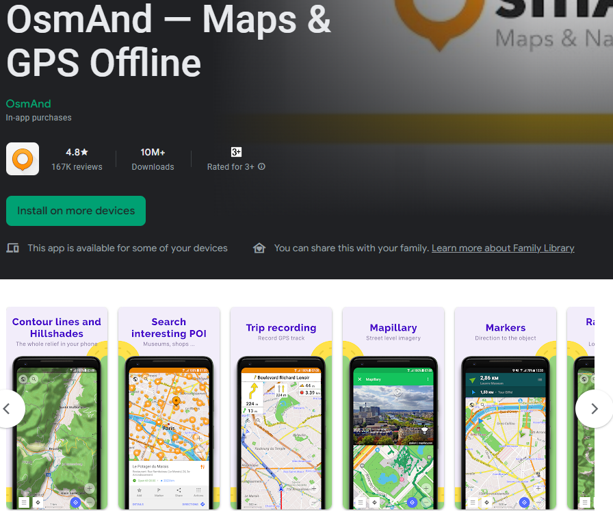

2.4 Application de navigation
Objectifs du cours
Dans cette section, vous découvrirez une vue d’ensemble des applications de navigation. À la fin de cette section, vous devriez être en mesure de :
- Comprendre l’application de navigation à choisir
- Comprendre ce qu’est Maps.me et OSMAnd
Activités d’apprentissage
Plusieurs applications mobiles existent pour faciliter la navigation sur le terrain en utilisant OpenStreetMap comme couche de base et en fonctionnant hors ligne pour les environnements à faible connexion. Les options comprennent OSMAnd et Maps.me. Bien que les outils de navigation ne soient pas nécessaires à la collecte de données, ils peuvent être extrêmement utiles aux équipes de collecte de données pour se rendre sur le terrain, ainsi qu’aux superviseurs et aux chefs de projet pour comprendre où leurs équipes se sont rendues.
Les applications de navigation présentent d’autres avantages, notamment :
- Collecte des pistes GPX : Les pistes GPX peuvent être utilisées pour enregistrer les déplacements sur le terrain ainsi que les itinéraires routiers et autoroutiers en vue d’une numérisation ultérieure et d’un téléchargement vers OSM.
- Ajout des fichiers KML : L’ajout de couches de points à une carte de navigation peut aider les cartographes de terrain à se rendre à des endroits spécifiques ou à des blocs d’enquête qui ne figurent pas dans OSM.
Choix d’une application de navigation
| Je souhaite.. | Maps.me | OSMAnd |
|---|---|---|
| Utiliser les données pour trouver ma localisation | ✅ | ✅ |
| Trouver ma localisation hors ligne | ✅ | ✅ |
| Ajouter des fichiers kml pour les directives en navigation | ✅ | ✅ |
| Enregistrer les pistes GPX | 🟡(nécessitent des démarches supplémentaires en dehors du téléphone) | ✅(via l’ajout d’un greffon) |
| Ajouter des données à OSM dans l’application | ✅ | 🟡(nécessitent des greffons supplémentaires) |
OSMAnd
OSMAnd est une application mobile globale de visualisation de cartes et de navigation pour les cartes OSM en ligne et hors ligne. Elle est utilisée pour enregistrer les traces ainsi que les entités cartographiques. Elle permet d’enregistrer et de soumettre facilement des informations sur le terrain. Elle fonctionne sous Android et peut être utilisée avec ou sans connexion internet. Vous pouvez télécharger OSMAnd ici: https://play.google.com/store/apps/details?id=net.osmand&hl=en_US.

Maps.me
Maps.me est une application de navigation qui utilise les données OpenStreetMap et peut être utilisée hors ligne. Elle convient à la collecte d’informations sur les points d’intérêt (POI), dans la mesure où ceux-ci correspondent aux types de données que Maps.me affiche sur la carte. Il fonctionne sous Android/IOS et peut être utilisé avec ou sans connexion internet. Vous pouvez télécharger Maps.me ici: https://play.google.com/store/apps/details?id=com.mapswithme.maps.pro&hl=en_US.
Considérations supplémentaires
Lorsqu’ils téléchargent des applications destinées à être utilisées par un grand nombre d’individus, les responsables doivent prendre en compte les éléments suivants :
- Télécharger les fichiers apk avant l’installation. Il s’agit de fichiers hors ligne qui peuvent être partagés entre les utilisateurs et permettent une installation hors ligne.
- Pour Maps.Me, partager les cartes de base avec un fichier hors ligne plutôt que de demander à chaque utilisateur de télécharger une carte de base entière (c’est-à-dire le Liberia, le nord du Botswana) sur les données ou le wifi. Pour obtenir un fichier cartographique hors ligne, vous devez télécharger la carte sur un appareil. Branchez l’appareil sur un ordinateur et accédez au dossier de fichiers. Le fichier de la carte de base dans ce dossier peut être copié et collé dans le fichier approprié sur d’autres appareils.
[Quiz] Testez vos connaissances
-
Vous pouvez utiliser Maps.me si vous souhaitez collecter des informations telles que des traces GPX, des données OSM et des points de passage.
a. Vrai
b. Faux
Answer: 1. B
Liste de contrôle des activités
À la fin de cette section, vous devriez être en mesure de :
- Choisir la bonne application de navigation en fonction des exigences sur le terrain
Ressources complémentaires
Présentation:
Informations complémentaires:
- Tutoriel sur OSMAnd: https://learnosm.org/en/mobile-mapping/osmand/.
- OSMAnd Wiki: https://wiki.openstreetmap.org/wiki/OsmAnd
- Maps.me Wiki: https://wiki.openstreetmap.org/wiki/MAPS.ME.